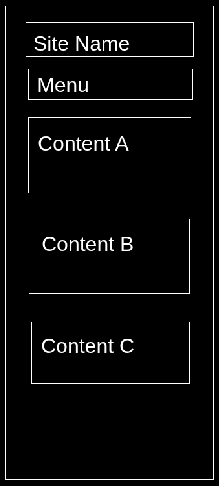

Wireframe
Mobile View
Desktop View

Factoriser des polynomes
This name was chosen because I teach (in France) my students mathematics and polynomial factorisation tends to be a usual sticking point.
Ce site aidera des etudiants a factoriser des polynomes de degre deux en leur montrant la theorie et des exemples.
Background: black - It won't hurt my eyes and I can look at it all night long.
Text: red - high-contrast and will not hurt my eyes.
Times New Roman - Used for all body text outside of the LaTeX math (which will be written in whatever the default LaTeX font is).